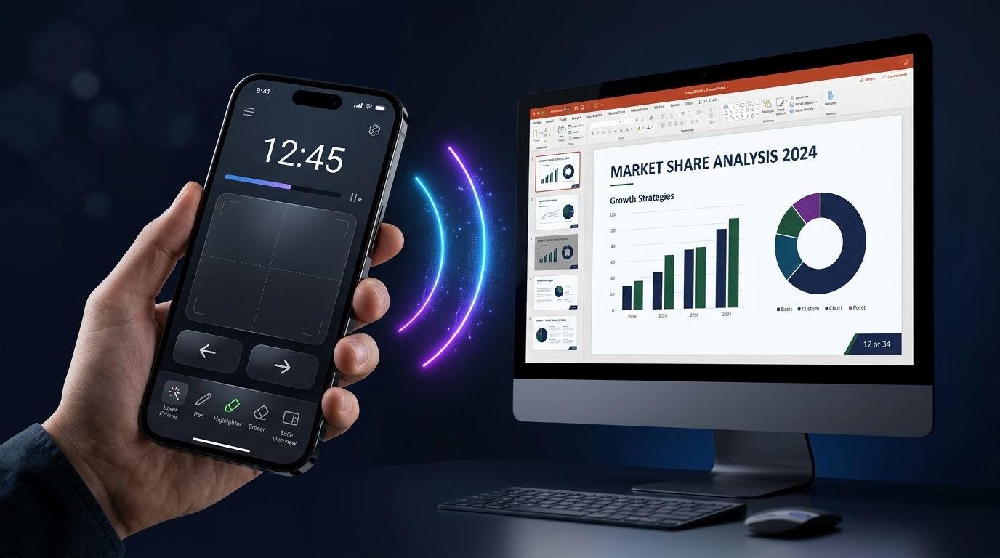

PowerPoint sunumlarınızı akıllı telefonunuzdan yönetin. Slayt geçişleri, lazer işaretçi, çizim araçları, touchpad ve sunum zamanlayıcı — hepsi tek bir uygulamada. Wi-Fi üzerinden düşük gecikmeli, güvenli bağlantı.

Karmaşık ayarlar gerekmez. Dakikalar içinde telefonunuzu kablosuz sunum kumandanıza dönüştürün.
QuickRemote sunucu uygulamasını Windows bilgisayarınızda başlatın. Otomatik TLS sertifikası oluşturulur ve QR kod ekranda görüntülenir.
Telefonunuzdaki QuickRemote uygulamasını açın. mDNS ile aynı ağdaki PC'ler otomatik listelenir veya QR kodu tarayın.
QR kodu okutun veya 4 haneli PIN kodunu girerek güvenli bağlantı kurun. SHA-256 doğrulama ile hemen sunumunuzu yönetmeye başlayın.
QuickRemote, sunumlarınızı kusursuz yönetmeniz için ihtiyacınız olan tüm araçları tek bir uygulamada sunar.
Sunumu tek dokunuşla ilerletin veya geri alın. Sunumu başlatın (F5), belirli bir slayta atlayın, sonlandırın (ESC). Slayt numarası ve toplam sayı gerçek zamanlı olarak telefonunuza yansır.
Lazer işaretçi, kalem, vurgulayıcı (highlighter) ve silgi araçlarını doğrudan telefonunuzdan kontrol edin. Kalem rengini COM otomasyonu ile dinamik olarak değiştirin.
Telefonunuzun ekranını hassas bir trackpad olarak kullanın. Sol/sağ tıklama, sürükle-bırak desteği ve ayarlanabilir fare hassasiyeti ile tam kontrol.
TLS/WSS şifreli bağlantı, her oturumda rastgele 4 haneli PIN, SHA-256 doğrulama, brute-force koruması (5 başarısız deneme → 60s engel), sertifika sabitleme ve kimlik doğrulama zaman aşımı.
mDNS (_quickremote._tcp) ile aynı ağdaki PC'ler otomatik listelenir. QR kod tarama, manuel IP girişi veya son 5 cihaza hızlı yeniden bağlanma seçenekleri. Bağlantı koptuğunda otomatik yeniden bağlanma.
Sunumunuzun ne kadar sürdüğünü gerçek zamanlı takip edin. Konuşmacı notları, mevcut slayt numarası ve toplam slayt sayısı anında telefonunuza aktarılır.
Windows bilgisayarınıza sunucu uygulamasını kurun, telefonunuza kumanda uygulamasını indirin. Aynı Wi-Fi ağında anında eşleşin.
Windows 10/11 · Flutter Desktop
WebSocket sunucusu + Win32 API
iPhone ve iPad
Flutter · QR tarama · mDNS
Android telefon ve tablet
Flutter · QR tarama · mDNS
Güvenilir ve yüksek performanslı bir mimari üzerine inşa edildi.
Çapraz platform UI framework
Düşük gecikmeli çift yönlü iletişim
Self-signed sertifika ile güvenli kanal
SendInput API + PowerPoint otomasyonu
_quickremote._tcp ile otomatik servis bulma
Fare/lazer verileri için yüksek frekanslı ikili format
QuickRemote hakkında en çok sorulan soruların yanıtları.
QuickRemote, akıllı telefonunuzu kablosuz bir sunum kumandası ve touchpad'e dönüştürür. PowerPoint sunumlarınızı uzaktan başlatabilir, slaytları ileri/geri geçebilir, lazer işaretçi, kalem ve vurgulayıcı gibi çizim araçlarını kullanabilir, fareyi kontrol edebilir ve sunum sürenizi takip edebilirsiniz.
Hayır. QuickRemote tamamen yerel Wi-Fi ağı üzerinden çalışır. İnternet bağlantısı gerekmez. Bilgisayarınız ve telefonunuz aynı Wi-Fi ağına bağlı olduğu sürece sorunsuz çalışır. Tüm veriler yerel ağda kalır, dış sunuculara hiçbir şey gönderilmez.
Tüm iletişim TLS/WSS ile şifrelenir. Her oturumda rastgele 4 haneli PIN oluşturulur ve SHA-256 ile doğrulanır. 5 başarısız PIN denemesinde IP adresi 60 saniyeliğine engellenir. Bağlanan cihaz 10 saniye içinde doğrulanmazsa bağlantı otomatik kesilir. İlk bağlantıda sertifika parmak izi saklanarak certificate pinning uygulanır.
Sunucu uygulaması Windows 10 ve Windows 11 üzerinde çalışır. Kumanda uygulaması ise Android ve iOS cihazlarda kullanılabilir. Her iki uygulama da Flutter ile geliştirilmiştir.
Üç farklı yöntemle bağlanabilirsiniz: (1) PC ekranındaki QR kodu telefonunuzla tarayarak, (2) mDNS otomatik keşif ile aynı ağdaki PC'lerin listesinden seçerek, (3) IP adresi ve PIN kodunu manuel olarak girerek. Ayrıca daha önce bağlandığınız son 5 cihaza hızlıca yeniden bağlanabilirsiniz.
QuickRemote, PowerPoint'in yerel çizim araçlarını uzaktan kontrol eder. Lazer işaretçi (Ctrl+L), kalem (Ctrl+P), vurgulayıcı (Ctrl+I) ve silgi (Ctrl+E) araçlarını telefonunuzdan seçebilirsiniz. Ayrıca COM otomasyonu sayesinde kalem rengini dinamik olarak değiştirebilirsiniz.
Telefonunuzu profesyonel bir sunum kumandası, touchpad ve çizim aracına dönüştürün. Tamamen ücretsiz.